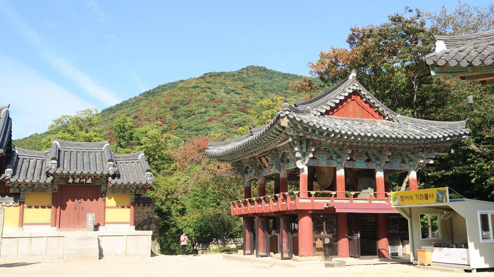
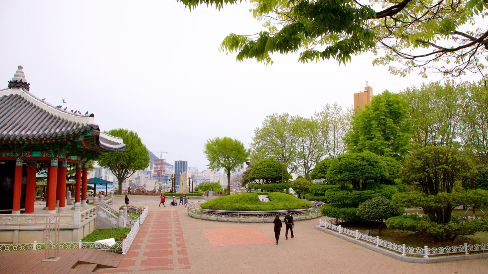

Sua próxima viagem:
Conheça Busan

Busan, a estrela em ascensão da Coreia do Sul, oferece de tudo, desde churrascarias de primeira linha até tradicionais barracas de comida de rua. Aqui,
exploramos a segunda cidade da Coreia do Sul e descobrimos as suas ofertas culinárias.
Para os amantes de história
Descubra 3 destinos imperdíveis em Busan
As atrações de Busan vão desde templos budistas centenários até paisagens incríveis. Conheça abaixo 3 lugares que você precisa visitar.
-

1. Templo Haedong Yonggungsa
O templo Haedong Yonggungsa é localizado à beira-mar e oferece belas vistas. Foi construído em 1376.
Bom para:- História
-

2. Templo Beomeo-sa
Situado nas montanhas, é um dos maiores santuários da Coreia do Sul, com arquitetura da Dinastia Joseon.
Bom para:- História
-

3. Parque Yongdusan
Localizado no centro de Busan, tem vistas da cidade e atrações como a Torre de Busan.
Bom para:- Casais
- Famílias
- Orçamento
As melhores coisas para fazer em Busan mostram a reputação da cidade como um importante porto marítimo na Ásia. Frequentemente vista como a essência da Coreia do Sul, você experimentará uma atmosfera única em termos de diversidade étnica e cultural, já que a cidade recebe um público cosmopolita o ano todo.